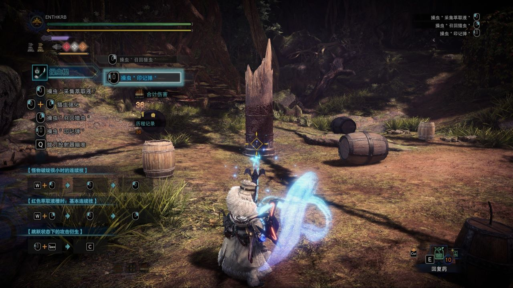
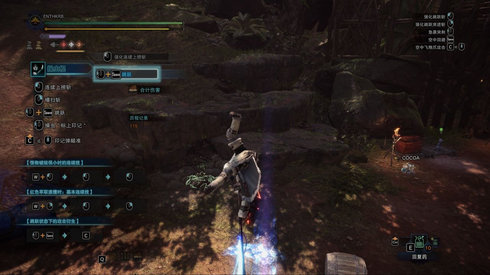
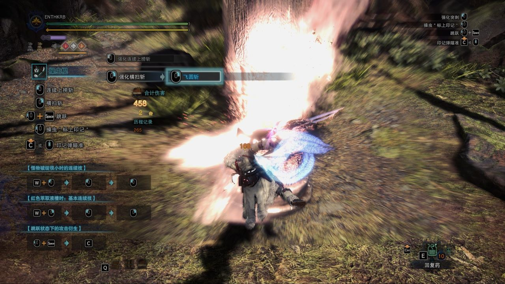
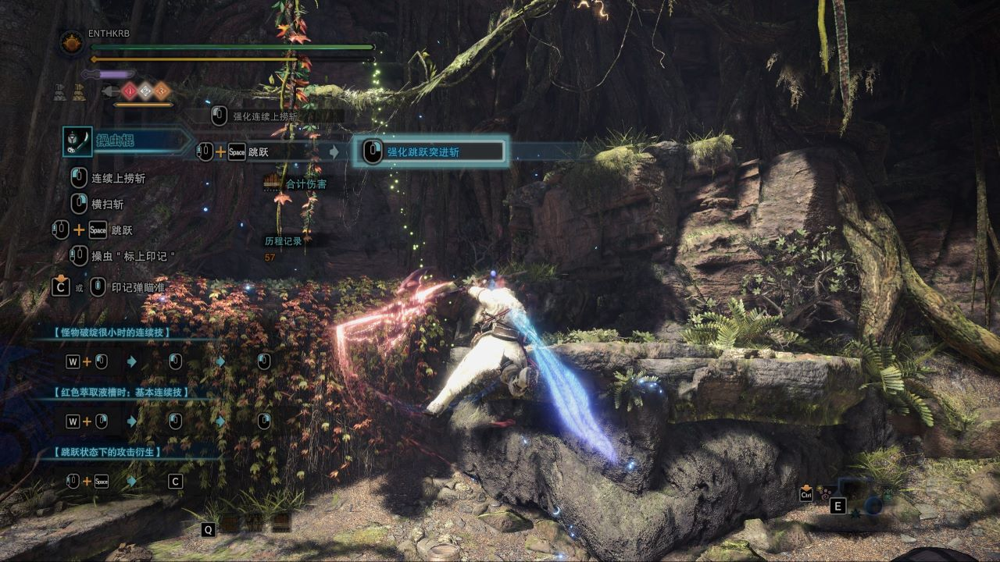
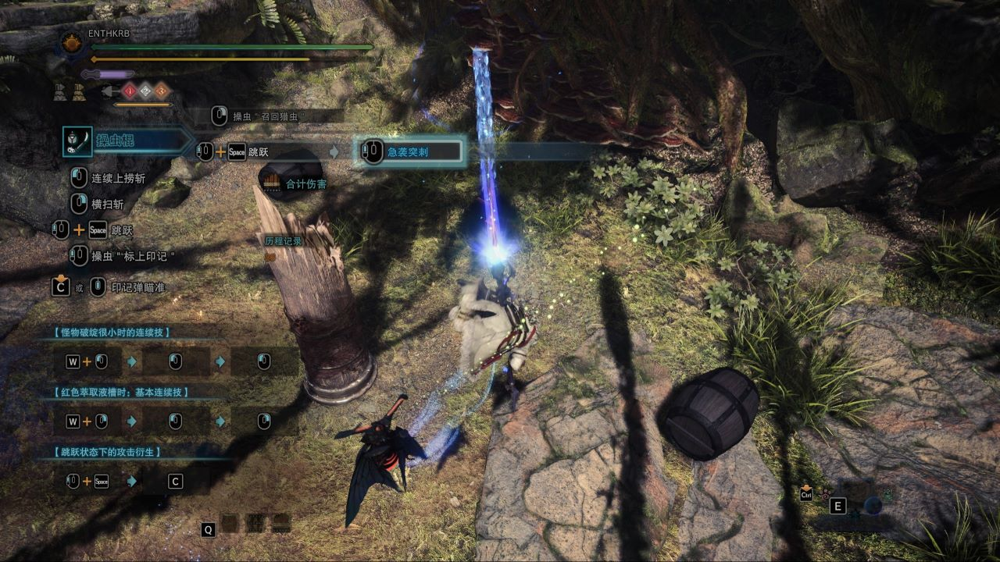
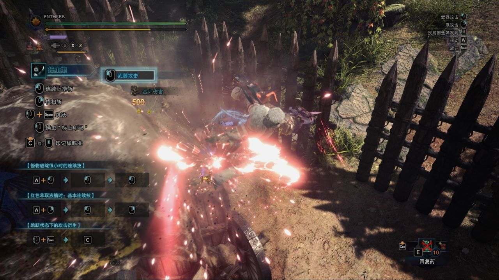

基 本 招 式
简介
本节主要介绍操虫棍的一些基本招式，包括点灯、猎虫指挥等，作为其它招式派生的基础。
猎虫强化
·介绍：在猎虫未待机的情况下，按住C键或者是点按中键切换进入瞄准模式，同时按下左键+右键召回猎虫并消耗一颗投射器弹药强化猎虫，持续一段时间。
·个人建议：非常重要的基础招式，猎虫强化建议战斗全程覆盖，可以带来很大的加成。
·提示：若你发现不能发动，请检查猎虫是否停在你手上或是否有投射器弹药！
萃取精华
·介绍：按住C键或者是点按中键切换进入瞄准模式，此时左键可以命令猎虫飞向指向地点，击中怪物停止并萃取精华，动作值为「20」，右键可召回猎虫并吸收精华，猎虫离开猎人后会持续消耗耐力，耐力清空后自动飞回进入待机状态。
·个人建议：优先点红灯强化招式，其次选择白灯，橙灯不推荐。个人习惯先点红灯和白灯，在任意一个灯即将结束时点橙灯集齐三灯刷新时间，可以最大化提高收益。怪物大幅度行动时尽量不要尝试点灯，否则难以萃取到目标精华且容易挨打。
·提示：武器为收起状态时，按前键可拿出武器并同时命令猎虫向前方飞出。
印记弹
·介绍：按住C键或者是点按中键切换进入瞄准模式，此时按前键可发射印记弹，印记弹命中敌人后造成动作值为「5」的打击伤害，同时猎虫会自动攻击目标敌人的命中部位并留下粉尘，直至手动召回或耐力耗尽。
·个人建议：除非特殊需要，否则本人不建议让猎虫通过印记弹自动攻击，尽量积蓄猎虫的耐力留给点灯和急袭突刺等关键招式。
跳跃
·介绍：同时按下前键+空格可发动跳跃。
·个人建议：操虫棍最基础的招式，一切空中招式的基础。


飞 圆 斩
简介
飞圆斩是操虫棍地面输出最高的招式，地面输出基本都围绕飞圆斩展开，故作为地面招式的主要介绍对象。
注意：飞圆斩属于红灯解放招式，没点红灯没有飞圆斩！
静止+左键+左键+左键+右键
·无灯：连续使出「连续上捞斩」「袈裟斩」「二连斩」「敲打」，分别造成动作值为「16+14」「18」「18+24」「30」的六段伤害。
·有灯：连续使出「强化连续上捞斩」「强化袈裟斩」「强化二连斩」「飞圆斩」，分别造成动作值为「16+14+15」「15+19」「16+14+28」「24+42」的十段伤害。
·个人建议：个人不常用此条派生路线，因为飞圆斩在第四段，路线太长，你基本也没机会站着不动引出此条路线。至于敲打，只能说没有红灯的操虫棍等于没有。
前进+右键+左键+后退+右键
·无灯：连续使出「飞身跃入斩」「敲打」「突刺」「回避斩」，分别造成动作值为「26」「30」「10」「17」的四段伤害。
·有灯：连续使出「飞身跃入斩」「飞圆斩」「强化突刺」「回避斩」，分别造成动作值为「26」「24+42」「12+11」「17」的六段伤害。
·个人建议：本人较为常用的派生路线，第二段就派生出飞圆斩，甚至可以在回避斩后面按右键再派生出飞圆斩、强化突刺、回避斩，飞圆斩有较大的前方位移，靠回避斩的后方位移可拉回一定距离，控制好距离完美闭环。需要注意的就是强化突刺不是为了攻击，而是为了派生回避斩，飞圆斩后不能派生回避斩，而此时怪物大概率在你后面，此时要及时作出反应！
·提示：武器为收起状态时，同时按下前进+左键也可使出飞身跃入斩，右键则不能。

空 中 招 式
简介
操虫棍拥有丰富的空中招式，此节会对空中招式进行综合介绍，但由于空中招式派生简单且极度依赖于实战情况，故不会给出派生建议。
空中回避
·介绍：按下空格向视角方向跳跃变向，但在空中只能发动一次，发动舞踏跳跃后刷新次数。
·个人建议：非常关键的空中招式，直接无视物理法则瞬间变向，战斗中需灵活运用，极其方便有效。
跳跃斩·强化跳跃斩
·介绍：按下左键发动，无灯情况下发动一次斩击后落地，动作值为「15」；有灯情况下将身体水平并垂直旋转武器直至落地，每一击动作值为「8」。
·个人建议：此招式可大幅提升骑乘值，多次发动可以轻松骑乘怪物，本人常常在怪物准备离开时发动骑乘，避免切换场地带来麻烦。
跳跃突进斩·强化跳跃突进斩·舞踏跳跃
·介绍：按下右键发动，无灯情况下向前位移一段距离后发动一次斩击，动作值为「28」；有灯情况下前进并旋转武器攻击，动作值为「6+4+7+4+3+32」。若击中敌人（有灯情况下要求最后一击击中敌人）则自动发动舞踏跳跃，即在空中跳跃一次。
·个人建议：此招式一般用于向前方空中位移，或通过触发舞踏跳跃保持空中状态，很少用来输出，因为伤害太低，且多段攻击会浪费武器斩味。
·提示：在不落地的情况下，舞踏跳跃最多发动四次，此后会直接落地。舞踏跳跃会刷新空中回避的使用次数。有灯情况下最后一击未击中将落地。
急袭突刺
·介绍：按下前键发动，用棍子向下贯穿突刺直至击中地面，落地后继续向前方发动两次斩击，俗称“下戳”，下戳过程中至多命中两次，总动作值为「28+42+7+36」。若发动的一瞬间猎虫处于待机状态，那么猎虫会停在空中并在整个招式结束后飞向猎人，贯穿攻击路径上的怪物，每一击动作值为「35」，俗称“登虫”，之后如同印记弹一般自动攻击被急袭突刺攻击到的敌人。
·个人建议：操虫棍的核心招式，也是输出最高的招式，配合猎虫穿透可打出高额伤害，经常使用此招式可选择低速高力量的猎虫，低速可增加判定次数以获取更高伤害，对于那种体型大的怪物更是如此。
·提示：此招式属于冰原DLC新增招式。一般在登虫结束后选择召回猎虫，以免浪费猎虫耐力。此招式伤害虽高，但不建议无脑使用，且不注意很容易打空，尽量视具体情况与其它招式组合使用。


飞 翔 爪 · 软 化
简介
·飞翔爪：飞翔爪是冰原新加入的一种功能性道具，可以发射飞翔爪，击中非小型怪物后可将自身拉向怪物的击中部位并抓牢，抓牢后可移动位置或攻击怪物并软化当前部位，攻击后会自动脱离怪物。
·软化：藉由飞翔爪抓牢后攻击即可软化怪物的指定部位，一段时间内被软化的部位将出现白色印记并提高肉质，攻击该部位将有机会造成更高伤害。
飞翔爪
在收起武器的状态下长按C键或点按中键进入瞄准模式，此时按下右键即可发射飞翔爪。操虫棍属于轻武器，发射距离较近，且需要攻击同一部位两次才能完成软化，但相比重武器，轻武器的飞翔爪攻击会掉落投射器弹药，对于操虫棍来说投射器弹药尤为重要，也算是一种获取的方法，但注意同一怪物掉落次数有限。
此外，在飞翔爪上身后，怪物可能会发动反制攻击，即进行大幅度动作，此时可能会被甩出，倒地并受到伤害。
操虫棍的飞翔爪软化攻击为五段，动作值分别为「14+15+15+18+32」，不建议使用飞翔爪作为输出手段，限制行动的同时容易受伤。
软化
软化后的怪物部位呈白色，肉质上升，可造成更高伤害，且不易弹刀（武器斩味太低攻击肉质不好的部位会弹开攻击），持续时间为180秒，重复软化同一部位可刷新时间，但效果不叠加。
若拥有飞翔爪攻击强化技能，即使是轻武器也只需一次飞翔爪攻击就能完成软化。软化属于重要招式，尽量软化你经常攻击的部位并尽可能保持战斗全程覆盖。
